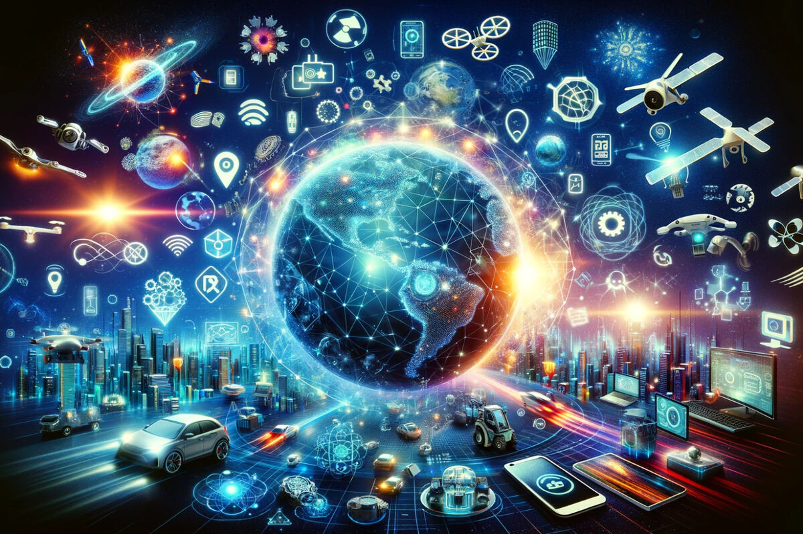
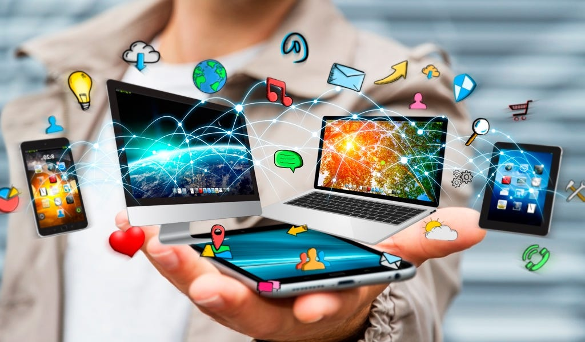

¿Qué es la Innovación Tecnológica?
La innovación tecnológica se refiere a la implementación de nuevas ideas, productos o procesos que mejoran la eficiencia y efectividad en diversas industrias.
Tipos de Innovación
Innovación de Producto: La innovación de productos consiste en la introducción de nuevos bienes en el mercado que modifican las tendencias de un sector. Pueden ser totalmente nuevos y totalmente diferenciados de lo ya existente, o bien soluciones modificadas a partir de productos existentes hasta crear uno distinto e innovador
Innovación de Proceso:todo cambio significativo introducido en la forma de ejecutar una tarea determinada. Innovar no solo es crear cosas totalmente nuevas, sino que la innovación también puede ser modificar algo lo suficiente como para crear un proceso totalmente distinto al que se seguía anteriormente.
Innovación Organizativa: es un método que tiene como objetivo la búsqueda de nuevos diseños empresariales, alterando las estructuras internas de la organización y cambiando los límites existentes entre ésta y el mercado en general.
Innovación de Marketing digital: se refiere a la implementación de estrategias, técnicas o tecnologías creativas y novedosas para promover e interactuar con un público objetivo, mejorar la visibilidad de la marca y, en última instancia, impulsar las ventas o las conversiones. A menudo implica encontrar nuevas formas de comunicar el mensaje de una marca o llegar a los consumidores a través de diversos canales digitales.
Impacto en la Sociedad
La innovación tecnológica ha transformado nuestra forma de vivir, trabajar y comunicarnos. Ha facilitado el acceso a la información y ha creado nuevas oportunidades económicas.
Futuro de la Innovación
Inteligencia Artificial y Aprendizado de Máquina A IA continuará avansando,y permitiendo innovaciones en áreas como salud, transporte y servicios financieros, con algoritmos más preferidos y personalizados.